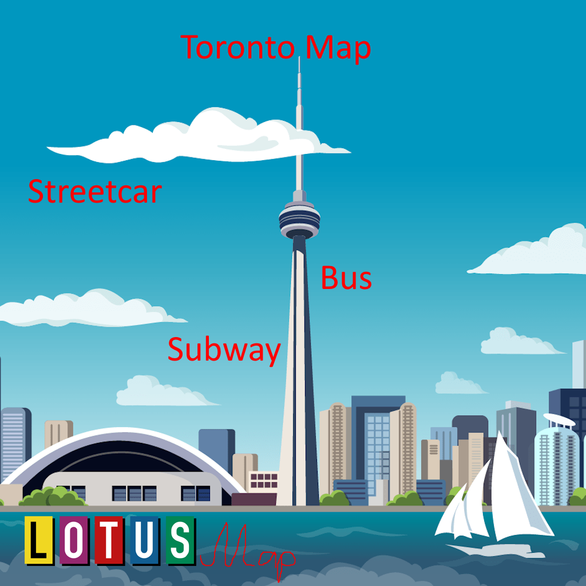
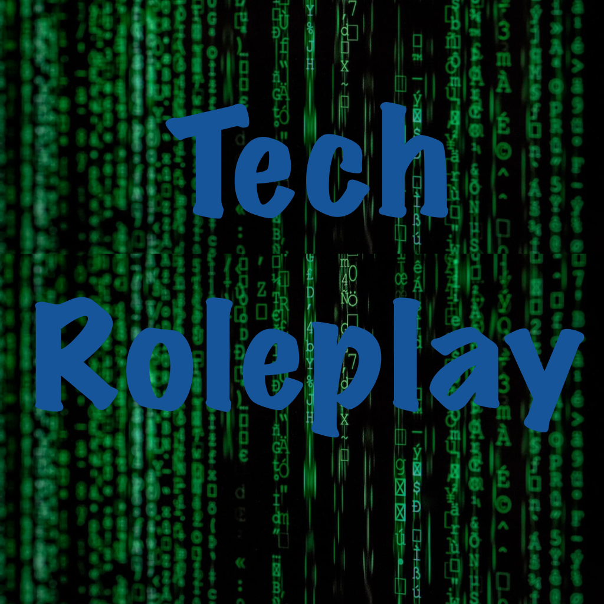

> whoami
Computer Science student · Hochschule Nordhausen
> cat interests.md
self-hosted infrastructure, Rust, FOSS tooling,
OpenStreetMap. based in Germany, aiming for Toronto.
> ▊
projects finished
Project modules
perron
Multimodal bike + transit routing · Flutter · F-Droid target
betterdrink
Hydration reminder app · GPL-3.0 · no pro tier, ever

Toronto Map for Lotus Simulator
Detailed Toronto transit map with streetcars and buses for Lotus Simulator
opentransitsim
FOSS multiplayer transit sim · AGPL-3.0 · Codeberg
ebikemanagernco
Local-only e-bike companion · specs, OSM, Health Connect

GTA 5 RolePlay Server
Realistic multiplayer roleplay server for GTA 5 — paused due to Rockstar's policy changes
rss-reader
Local-first RSS reader · rule-based filtering
food-tracker
FOSS food/recipe/weight tracker · on-device only
spadina-ui
Fast, cross-platform desktop UI framework in Rust — no Chromium bloat, native rendering
ai-npc-server
Private sim server · LLM-driven contextual NPCs
S-Bahn Berlin for Subway Sim 2
Concept for a realistic Berlin S-Bahn system in Subway Sim 2 — not yet in active development
Computer Science Projects
Various programming projects from advanced computer science courses — algorithms, data structures
Healthcare Information System
Informational web platform helping school students understand and manage diabetes
Stack
About
Contact
contact@timmofto.dev
Socials